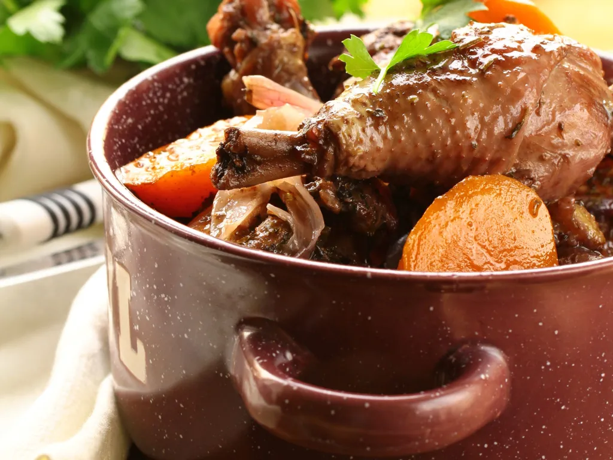

Coq au vin
Le Coq au Vin est un plat traditionnel lyonnais préparé avec du coq mariné dans du vin rouge, des champignons, des lardons et des oignons. Il est riche en saveurs et parfaitement accompagné d'un bon vin rouge.
Decouvrez les delices de la cuisine lyonnaise.

La cuisine lyonnaise est réputée pour sa richesse en saveurs et son authenticité. Elle est un véritable trésor de la gastronomie française. Venez explorer les délices de cette région à travers ses plats emblématiques.
Le Coq au Vin est un plat traditionnel lyonnais préparé avec du coq mariné dans du vin rouge, des champignons, des lardons et des oignons. Il est riche en saveurs et parfaitement accompagné d'un bon vin rouge.

Les Quenelles de Brochet sont de délicieuses boulettes de brochet et de farine, servies avec une sauce Nantua. C'est un plat lyonnais incontournable pour les amateurs de poissons.

La Salade Lyonnaise est une salade composée de laitue, de lardons, de croûtons et d'un ceuf poché, le tout assaisonné avec une vinaigrette à la moutarde. Une entrée délicieusement croquante et savoureuse.

Le restaurant Paul Bocuse est une institution de la cuisine lyonnaise. Fondé par le célèbre chef éponyme, il offre une expérience gastronomique exceptionnelle avec des plats traditionnels revisités dans un cadre élégant.

La Brasserie Georges est un lieu emblématique de Lyon. connu pour sa cuisine lyonnaise authentique et son ambiance conviviale, Dégustez des plats classiques dans un cadre historique.